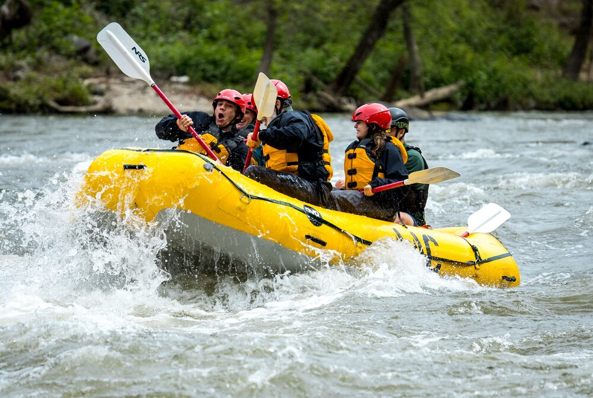
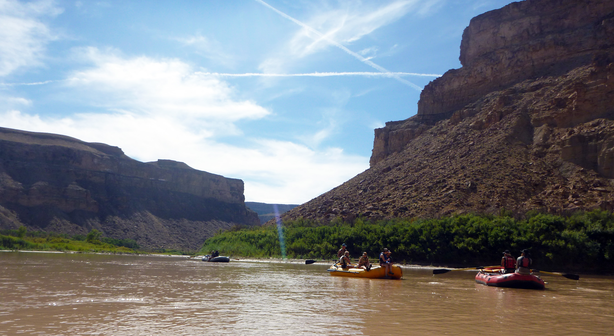

Choose Your Adventure
Salmon River

Nestled deep in the Frank Church Wilderness of No Return winds the Salmon river. The Salmon was given the nickname long ago as the River of No Return by the people living near it because of the number of folks that came to visit and fell so in love with the rugged beauty of the river that they never left. There are good rapids all summer...but families with children who like to swim tend to appreciate the late summer's slower, warmer water more.
Difficulty: I - IV
Gray Canyon
Winding through canyons in central Utah, in some of the most desolate land anywhere, the Green river flows towards the mighty Colorado river and the sea. High grey stone cliffs, beautiful desert scenery, and great rapids have made this run famous. Desolation Canyon has been recognized as a National Landmark. This designation is based on the uniqueness and rich history that the canyon tells.
Difficulty: II - III
Grand Canyon